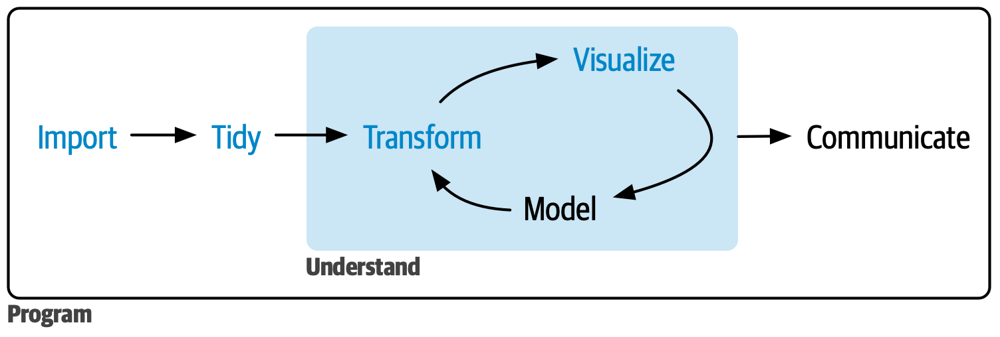
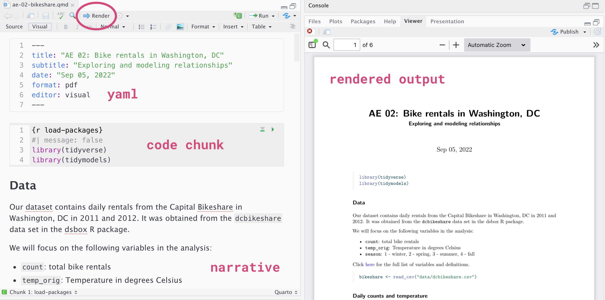
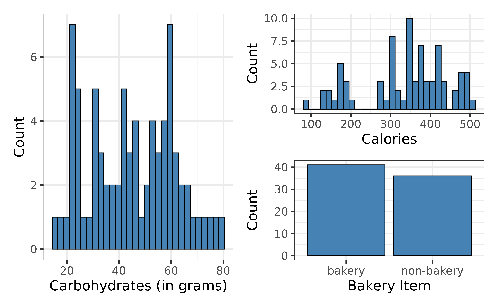
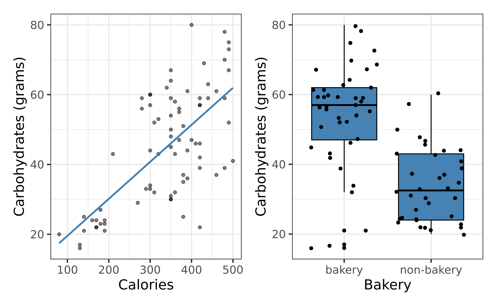
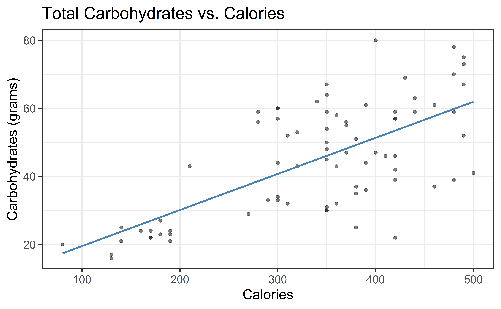
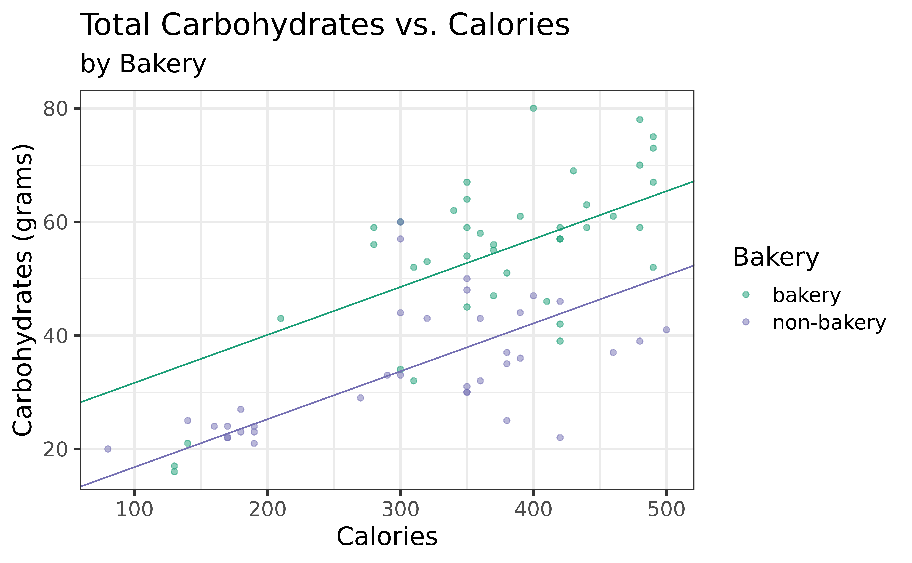
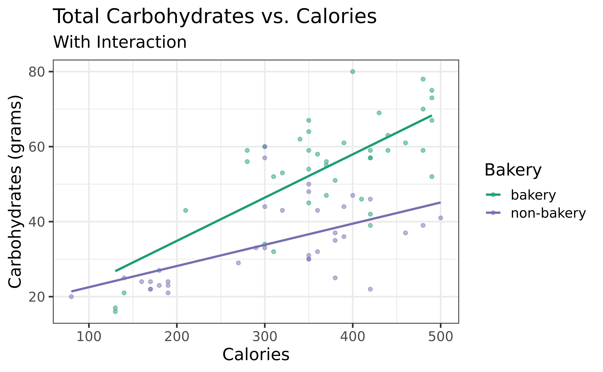
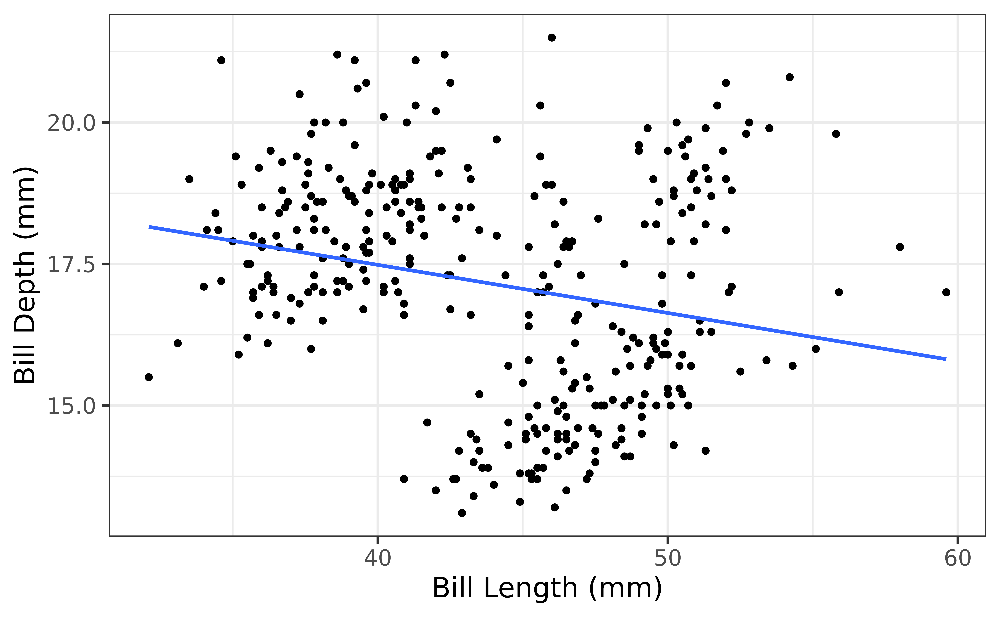
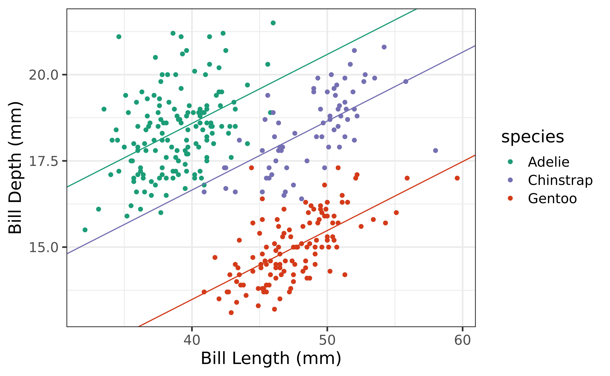

05:00
Welcome to MAT 212!
Welcome!
Meet Prof. Friedlander!
- Education and career journey
- Grew up outside New York City
- BS in Math & Statistics from Rice University (Houston, TX)
- Business Analyst at Capital One (Plano, TX)
- MS and PhD in Statistics & Operations Research from UNC-Chapel Hill
- Postdoc in Population Genetics at University of Chicago
- Assistant Professor of Math at St. Norbert College (Green Bay, WI)
- Work focuses on statistics education, queuing theory, and population genetics
- Big sports fan: NY Knicks, Giants, Rangers, Yankees, UNC Tarheels
- Dad of three cute dogs: Allie, Miriam, Tony
Meet Prof. Friedlander!

Tell me about yourself
Navigate to Teams.
In a private chat to me answer the following questions:
- What would you like me to call you?
- Why are you taking this class?
- How are you feeling about taking this class? Be honest… you won’t hurt my feelings.
- How much experience with R, if any, do you have?
- Is there anything else you would like me to know about you? E.g. athlete, preferred pronouns, accommodations, etc…
In the class discussion forum, please recommend at least one song for the class playlist… Feel free to suggest as many songs as you like.
Statistical modeling
What is a model?
- DATA = MODEL + ERROR
- DATA = PATTERN + DEPARTURES FROM PATTERN
- How do we identify the actual pattern?
- GOAL: Find a model for a relationship between a response/outcome/target variable \(Y\) and one (or more) explanatory/predictor variables (\(X_1,\ldots,X_k\))
- Models are a simplified but tractable version of reality
What are response and explanatory variables?
Geoge E. P. Box
- From Wikipedia: British statistician, who worked in the areas of quality control, time-series analysis, design of experiments, and Bayesian inference. He has been called “one of the great statistical minds of the 20th century”.
- “all models are wrong, but some are useful”

Why build a model?
- Making predictions
- Understanding relationships
- Assessing differences
What is regression analysis?
“In statistical modeling, regression analysis is a set of statistical processes for estimating the relationships among variables. It includes many techniques for modeling and analyzing several variables, when the focus is on the relationship between a dependent variable and one or more independent variables (or ‘predictors’). More specifically, regression analysis helps one understand how the typical value of the dependent variable (or ‘criterion variable’) changes when any one of the independent variables is varied, while the other independent variables are held fixed.”
Source: Wikipedia (previous definition)
Note: I don’t really like the terms “independent” and “dependent” variables
Examples of regression in practice
New Yorkers Will Pay $56 A Month To Trim A Minute Off Their Commute
How FiveThirtyEight’s 2020 Presidential Forecast Works — And What’s Different Because Of COVID-19
Effect of Forensic Evidence on Criminal Justice Case Processing
Why it’s so freaking hard to make a good COVID-19 model (from March 2020)
MAT 212
Course FAQ
Q - What background is assumed for the course?
A - Introductory statistics or previous experience with mathematics at a level that would allow you to learn intro stats concepts relatively easily
. . .
Q - Will we be doing computing?
A - Yes. We will use the computing language R for analysis and Quarto for writing up results.
. . .
Q - Am I expected to have experience using any of these tools?
A - No. I do not expect you to have any exposure to R and certainly not Quarto.
. . .
Q - Will we learn the mathematical theory of regression?
A - Yes and No. The course is primarily focused on application; however, we will discuss some of the mathematics of simple linear regression.
. . .
Q - How much time should I be spending on this class?
A - This is a 3-credit class taught over 15 days which meets for 2.5 hours per day. That means that you should be spending approximately 9 hours per day working on this course (i.e. 6.5 hours outside of class)
Course learning objectives
By the end of the semester, you will be able to…
- analyze real-world data to answer questions about multivariable relationships.
- use R to fit and evaluate linear and logistic regression models.
- assess whether a proposed model is appropriate and describe its limitations.
- use Quarto to write reproducible reports.
- effectively communicate statistical results through writing and oral presentations.
Course Topics
What is a quantitative and what is a categorical variable?
. . .
| Chapter | Response | Predictor/Explanatory |
|---|---|---|
| 1-2 | Quantitative | Single Quantitative |
| 3-4 | Quantitative | Multiple Quantitative |
| 5 | Quantitative | Single Categorical |
| 6-8 | Quantitative | Multiple Categorical |
| 9 | Categorical | Single Quant/Cat |
| 10 | Categorical | Multiple Quant/Cat |
| 11 | Both | Both |
Course overview
Course toolkit
- Course website: mat212wi25.netlify.app
- Central hub for the course!
- Tour of the website
- Canvas: cofi.instructure.com
- Gradebook
- Assignment submissions
- Announcements
- Teams
- Activities
- Discussions
- Homework Help
Computing toolkit

All analyses using R, a statistical programming language
Write reproducible reports in Quarto
Access RStudio through College of Idaho posit Workbench
Use your College of Idaho email and password
- Sign into RStudio!
03:00
Activities + assessments
Prepare, Participate, Practice, Perform
Prepare: Introduce new content and prepare for lectures by completing the readings (and sometimes watching videos)
Participate: Attend and actively participate in lectures, office hours, team meetings
Practice: Practice applying statistical concepts and computing with application exercises during lecture, graded for completion
Perform: Put together what you’ve learned to analyze real-world data
Homework assignments (individual)
Two oral exams
Final group projects
Grading
| Category | Percentage |
|---|---|
| Homework | 25% |
| Final Project | 25% |
| Exam 01 | 20% |
| Exam 02 | 20% |
| Application Exercises | 10% |
Note: You must receive at least a 60% on your two exams to pass the course.
See the syllabus for details on how the final letter grade will be calculated.
Support
- Attend office hours to meet with Prof. Friedlander (Boone 126B)
- MTWRF : 11:00am-12:00pm
- Ask and answer questions on course discussion forum
- Use email for questions regarding personal matters and/or grades
- See the Course Support page for more details
Course policies
Late Homework
- There will be a 5% deduction for each 24-hour period the assignment is late for the first two days. After 2 days, students will receive a 30% reduction. No homework will be accepted after it is returned to the class.
Late Application Exercises
AEs are due the day after the class they are assigned. No late work is accepted for application exercises, since these are designed as in-class activities to help you prepare for homework.
School-Sponsored Events
If an application exercise or project must be missed due to a school-sponsored event, you must let me know at least a week ahead of time so that we can schedule a time for you to make up the work before you leave. If you must miss a exam or a project presentation due to illness, you must let me know before class that day so that we can schedule a time for you to make it up. Failure to adhere to this policy will result in a 35% penalty on the corresponding assignment.
Academic integrity
The College of Idaho maintains that academic honesty and integrity are essential values in the educational process. Operating under an Honor Code philosophy, the College expects conduct rooted in honesty, integrity, and understanding, allowing members of a diverse student body to live together and interact and learn from one another in ways that protect both personal freedom and community standards. Violations of academic honesty are addressed primarily by the instructor and may be referred to the Student Judicial Board.
By participating in this course, you are agreeing that all your work and conduct will be in accordance with the College of Idaho Honor Code.
Collaboration & sharing code
I have policies!
Let’s read about them in the Academic honesty section of the syllabus
Use of artificial intelligence (AI)
- You should treat AI tools, such as ChatGPT, the same as other online resources.
- There are two guiding principles that govern how you can use AI in this course:1
- (1) Cognitive dimension: Working with AI should not reduce your ability to think clearly. We will practice using AI to facilitate—rather than hinder—learning.
- (2) Ethical dimension: Students using AI should be transparent about their use and make sure it aligns with academic integrity.
Use of artificial intelligence (AI)
✅ AI tools for code: You may make use of the technology for coding examples on assignments or to fix bugs in your code. However, if you do so, you must explicitly cite where you obtained the code and AI should serve as a learning aid, not a replacement for thinking.
❌ No AI tools for narrative: Unless instructed otherwise, AI is not permitted for writing narrative on assignments.
Important
In general, you may use AI as a resource as you complete assignments but not to answer the exercises for you. You are ultimately responsible for the work you turn in; it should reflect your understanding of the course content. Any code or content from your homework which was not covered in class or cited, is eligible to be on your exams.
Having a successful semester in MAT 212
Five tips for success
Complete all the preparation work (readings and videos) before class.
Ask questions.
Start your work (homework and projects) early!
Don’t procrastinate and don’t let a day pass by with lingering questions.
Stay up-to-date on announcements on Canvas and sent via email.
What should I know about this class
This class is a lot of work
Steep learning curve in the beginning… stick with it! I promise you can do it!
More writing than you probably expected… it is not enough for Dr. F to know what you mean to say… you must say that! Dr F. always asks: “If this student said this in a job interview, would they get hired?”
In statistics, there is rarely one RIGHT answer… it’s all about extracting information from data to make arguments
Dr. F’s Pet Peeves
Showing up late to class
Using Generative AI to do your thinking for you
Bug Bounty
If you find a typo on the website, slides, homework, activities, etc (e.g. broken link, typo, etc…) and you are the first person to point it out, you will receive a bonus point toward your HW grade. However, you may not exceed 100%.
If you message me about this during class, you will not receive your extra credit.
Questions?
Raise your hand or post on Teams
The Big Picture
Topics
- Data analysis life cycle
- Reproducible data analysis

Source: R for Data Science with additions from The Art of Statistics: How to Learn from Data.

Source: R for Data Science
Reproducibility
Reproducibility checklist
What does it mean for an analysis to be reproducible?
. . .
Near term goals:
✔️ Can the tables and figures be exactly reproduced from the code and data?
✔️ Does the code actually do what you think it does?
✔️ In addition to what was done, is it clear why it was done?
. . .
Long term goals:
✔️ Can the code be used for other data?
✔️ Can you extend the code to do other things?
Why is reproducibility important?
Results produced are more reliable and trustworthy (Ostblom and Timbers 2022)
Facilitates more effective collaboration (Ostblom and Timbers 2022)
Contributing to science, which builds and organizes knowledge in terms of testable hypotheses (Alexander 2023)
Possible to identify and correct errors or biases in the analysis process (Alexander 2023)
When things go wrong
| Reproducibility error | Consequence | Source(s) |
|---|---|---|
| Limitations in Excel data formats | Loss of 16,000 COVID case records in the UK | (Kelion 2020) |
| Automatic formatting in Excel | Important genes disregarded in scientific studies | (Ziemann, Eren, and El-Osta 2016) |
| Deletion of a cell caused rows to shift | Mix-up of which patient group received the treatment | (Wallensteen et al. 2018) |
| Using binary instead of explanatory labels | Mix-up of the intervention with the control group | (Aboumatar and Wise 2019) |
| Using the same notation for missing data and zero values | Paper retraction | (Whitehouse et al. 2021) |
| Incorrectly copying data in a spreadsheet | Delay in the opening of a hospital | (Picken 2020) |
Source: Ostblom and Timbers (2022)
Toolkit
Scriptability \(\rightarrow\) R
Literate programming (code, narrative, output in one place) \(\rightarrow\) Quarto
Version control \(\rightarrow\) Git / GitHub (Beyond the scope of this course)
R and RStudio
R is a statistical programming language
RStudio is a convenient interface for R (an integrated development environment, IDE)

RStudio IDE

Quarto
Fully reproducible reports – the analysis is run from the beginning each time you render
Code goes in chunks and narrative goes outside of chunks
Visual editor to make document editing experience similar to a word processor (Google docs, Word, Pages, etc.)
Quarto

How will we use Quarto?
Every application exercise and assignment is written in a Quarto document
You’ll have a template Quarto document to start with
The amount of scaffolding in the template will decrease over the semester
Our first AE!
Group Work Roles
Any time we are working on AEs, I will randomly assign you to groups of two/three. Each person will have a role:
- Driver:
- Writes code and fills out Quarto template
- Connects to TV
- Responsible for submitting final work
- Reporter:
- Shares thoughts from group during class discussions
- Should have computer closed
- Facilitator:
- Responsible for looking stuff up (e.g. code, cheatsheets, etc.)
Multivariable relationships
Complete through Exercise 15.
Carbohydrates in Starbucks food
Starbucks often displays the total calories in their food items but not the other nutritional information.
Carbohydrates are a body’s main fuel source. The Dietary Guidelines for America recommend that carbohydrates make up 45% to 65% of total daily calories.2
Our goal is to understand the relationship between the amount of carbohydrates and calories in Starbucks food items. We’d also like to assess if the relationship differs based on the type of food item (bakery, salad, sandwich, etc.)
Starbucks data
library(openintro)
starbucks <- starbucks |>
mutate(bakery = factor(if_else(type == "bakery", "bakery", "non-bakery")))
glimpse(starbucks)Rows: 77
Columns: 8
$ item <chr> "8-Grain Roll", "Apple Bran Muffin", "Apple Fritter", "Banana…
$ calories <int> 350, 350, 420, 490, 130, 370, 460, 370, 310, 420, 380, 320, 3…
$ fat <dbl> 8, 9, 20, 19, 6, 14, 22, 14, 18, 25, 17, 12, 17, 21, 5, 18, 1…
$ carb <int> 67, 64, 59, 75, 17, 47, 61, 55, 32, 39, 51, 53, 34, 57, 52, 7…
$ fiber <int> 5, 7, 0, 4, 0, 5, 2, 0, 0, 0, 2, 3, 2, 2, 3, 3, 2, 3, 0, 2, 0…
$ protein <int> 10, 6, 5, 7, 0, 6, 7, 6, 5, 7, 4, 6, 5, 5, 12, 7, 8, 6, 0, 10…
$ type <fct> bakery, bakery, bakery, bakery, bakery, bakery, bakery, baker…
$ bakery <fct> bakery, bakery, bakery, bakery, bakery, bakery, bakery, baker…- Observations: 77 Starbucks food items
- Variables:
carb: Total carbohydrates (in grams)calories: Total caloriesbakery:bakery: bakery food item,non-bakery: other food type
Terminology
carbis the response variable- variable whose variation we want to understand / variable we wish to predict
- also known as outcome or target variable
. . .
calories,bakeryare the explanatory variables- variables used to account for variation in the response
- also known as predictor, or input variables
Univariate exploratory data analysis

Bivariate exploratory data analysis

Function between response and predictors
\[\text{carb} = f(\text{calories}, \text{bakery}) + \epsilon\]
- Goal: Determine \(f\)
- How do we determine \(f\)?
- Make an assumption about the functional form \(f\) (parametric model)
- Use the data to fit a model based on that form
Determine \(f\)
- Choose the functional form of \(f\), i.e., choose the appropriate model given the response variable
- Suppose \(f\) takes the form of a linear model
\[y = f(\mathbf{X}) = \beta_0 + \beta_1 x_1 + \dots + \beta_p x_p + \epsilon\]
. . .
- Use the data to fit (or train) the model, i.e, estimate the model parameters, \(\beta_0, \beta_1, \ldots, \beta_p\)
Carb vs. Calories

\[\text{carb} = \beta_0 + \beta_1 ~\text{calories} + \epsilon\]
Carb vs. Calories + Bakery

\[\text{carb} = \beta_0 + \beta_1 ~\text{calories} + \beta_2 ~\text{bakery} + \epsilon\]
Carb vs. Calories + Bakery (with interaction)

\[{\small \text{carb} = \beta_0 + \beta_1 ~\text{calories} + \beta_2 ~\text{bakery} + \beta_3 ~ \text{calories} \times \text{bakery} + \epsilon}\]
Simpson’s Paradox
Example: Palmer’s Penguins
Size measurements, clutch observations, and blood isotope ratios for adult foraging Adélie, Chinstrap, and Gentoo penguins observed on islands in the Palmer Archipelago near Palmer Station, Antarctica.

Example: Palmer’s Penguins

What does the relationship between Length and Depth look like?
Example: Palmer’s Penguins

What does the relationship between Length and Depth look like now?
Simpson’s Paradox
Simpson’s Paradox is when there is a clear relationship between two variables but when you introduce a third variable that relationship disappears of reverses.
Statistical model vs. regression equation
Statistical model (also known as data-generating model)
\[{\small \text{carb} = \beta_0 + \beta_1 ~\text{calories} + \beta_2 ~\text{bakery} + \beta_3 ~ \text{calories} \times \text{bakery} + \epsilon}\]
Models the process for generating values of the response in the population (function + error)
. . .
Regression equation
Estimate of the function using the sample data
\[{\small \hat{\text{carb}} = \hat{\beta}_0 + \hat{\beta}_1 ~\text{calories} + \hat{\beta}_2 ~\text{bakery} + \hat{\beta}_3 ~ \text{calories} \times \text{bakery}}\]
Why fit a model?
Prediction: Expected value of the response variable for given values of the predictor variables
Inference: Conclusion about the relationship between the response and predictor variables
What is an example of a prediction question that can be answered using the model of carb vs. calories and bakery?
What is an example of an inference question that can be answered using the model of carb vs. calories and bakery?
Recap
We can use exploratory data analysis to describe the relationship between two variables
We make an assumption about the relationship between variables when doing linear regression
The two main objectives for fitting a linear regression model are (1) prediction and (2) inference
For Monday
- Read the syllabus
- Complete and submit today’s AE
- Find you partner for the project
References
Alexander, Rohan. 2023. “Telling Stories with Data,” June. https://doi.org/10.1201/9781003229407.
Ostblom, Joel, and Tiffany Timbers. 2022. “Opinionated Practices for Teaching Reproducibility: Motivation, Guided Instruction and Practice.” Journal of Statistics and Data Science Education 30 (3): 241–50. https://doi.org/10.1080/26939169.2022.2074922.
Footnotes
These guiding principles are based on Course Policies related to ChatGPT and other AI Tools developed by Joel Gladd, Ph.D.↩︎↩︎
Source: Mayo Clinic↩︎